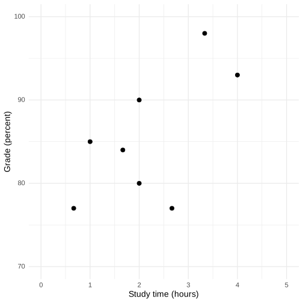
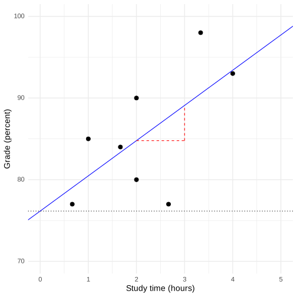
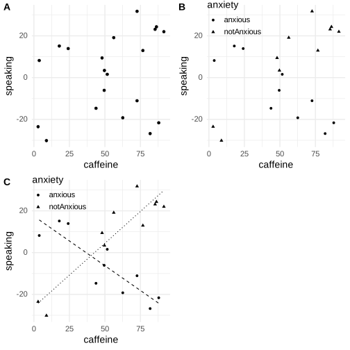
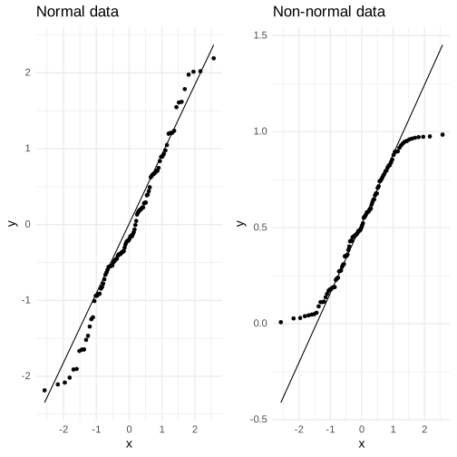

Chapter 14: The General Linear Model
Contents
Chapter 14: The General Linear Model#
library(tidyverse)
library(ggplot2)
library(fivethirtyeight)
library(caret)
library(MASS)
library(cowplot)
theme_set(theme_minimal(base_size = 14))
library(knitr)
set.seed(123456) # set random seed to exactly replicate results
opts_chunk$set(tidy.opts=list(width.cutoff=80))
options(tibble.width = 60)
# load the NHANES data library
library(NHANES)
# drop duplicated IDs within the NHANES dataset
NHANES <-
NHANES %>%
dplyr::distinct(ID,.keep_all=TRUE)
NHANES_adult <-
NHANES %>%
drop_na(Weight) %>%
subset(Age>=18)
── Attaching packages ─────────────────────────────────────────────────────────────────────────────────────────────────────────────────────────────── tidyverse 1.3.2 ──
✔ ggplot2 3.4.1 ✔ purrr 1.0.1
✔ tibble 3.1.8 ✔ dplyr 1.1.0
✔ tidyr 1.3.0 ✔ stringr 1.5.0
✔ readr 2.1.4 ✔ forcats 1.0.0
── Conflicts ────────────────────────────────────────────────────────────────────────────────────────────────────────────────────────────────── tidyverse_conflicts() ──
✖ dplyr::filter() masks stats::filter()
✖ dplyr::lag() masks stats::lag()
Some larger datasets need to be installed separately, like senators and
house_district_forecast. To install these, we recommend you install the
fivethirtyeightdata package by running:
install.packages('fivethirtyeightdata', repos =
'https://fivethirtyeightdata.github.io/drat/', type = 'source')
Loading required package: lattice
Attaching package: ‘caret’
The following object is masked from ‘package:purrr’:
lift
Attaching package: ‘MASS’
The following object is masked from ‘package:dplyr’:
select
Figure 14.1#
# create simulated data for example
set.seed(12345)
# the number of points that having a prior class increases grades
betas <- c(6, 5)
df <-
tibble(
studyTime = c(2, 3, 5, 6, 6, 8, 10, 12) / 3,
priorClass = c(0, 1, 1, 0, 1, 0, 1, 0)
) %>%
mutate(
grade =
studyTime * betas[1] +
priorClass * betas[2] +
round(rnorm(8, mean = 70, sd = 5))
)
p <- ggplot(df,aes(studyTime,grade)) +
geom_point(size=3) +
xlab('Study time (hours)') +
ylab('Grade (percent)') +
xlim(0,5) +
ylim(70,100)
print(p)

Correlation test#
# compute correlation between grades and study time
corTestResult <- cor.test(df$grade, df$studyTime)
corTestResult
Pearson's product-moment correlation
data: df$grade and df$studyTime
t = 2.0134, df = 6, p-value = 0.09073
alternative hypothesis: true correlation is not equal to 0
95 percent confidence interval:
-0.1261283 0.9255245
sample estimates:
cor
0.6349813
Figure 14.2#
lmResult <- lm(grade~studyTime,data=df)
p2 <- p+geom_abline(slope=lmResult$coefficients[2],
intercept=lmResult$coefficients[1],
color='blue')
p3 <- p2 +
geom_hline(yintercept=lmResult$coefficients[1],color='black',linewidth=0.5,linetype='dotted') +
annotate('segment',x=2,xend=3,color='red',linetype='dashed',
y=predict(lmResult,newdata=data.frame(studyTime=2))[1],
yend=predict(lmResult,newdata=data.frame(studyTime=2))[1]) +
annotate('segment',x=3,xend=3,color='red',linetype='dashed',
y=predict(lmResult,newdata=data.frame(studyTime=2))[1],
yend=predict(lmResult,newdata=data.frame(studyTime=3))[1])
print(p3)

Table 14.1#
# create simulated data for regression to the mean example
nstudents <- 100
readingScores <- data.frame(
#random normal distribution of scores for test 1
test1 = rnorm(n = nstudents, mean = 0, sd = 1) * 10 + 100,
#random normal distribution of scores for test 2
test2 = rnorm(n = nstudents, mean = 0, sd = 1) * 10 + 100
)
# select the students in the bottom 25% on the first test
cutoff <- quantile(readingScores$test1, 0.25)
readingScores <-
readingScores %>%
mutate(badTest1 = test1 < cutoff) %>%
dplyr::filter(badTest1 == TRUE) %>%
summarize(
`Test 1` = mean(test1),
`Test 2` = mean(test2)
)
readingScores = as.data.frame(t(readingScores)) %>% rename(Score = V1)
kable(readingScores, caption='Reading scores for Test 1 (which is lower, because it was the basis for selecting the students) and Test 2 (which is higher because it was independent from Test 1).')
Table: Reading scores for Test 1 (which is lower, because it was the basis for selecting the students) and Test 2 (which is higher because it was independent from Test 1).
| | Score|
|:------|---------:|
|Test 1 | 87.88674|
|Test 2 | 100.72289|
Linear model output#
summary(lmResult)
Call:
lm(formula = grade ~ studyTime, data = df)
Residuals:
Min 1Q Median 3Q Max
-10.656 -2.719 0.125 4.703 7.469
Coefficients:
Estimate Std. Error t value Pr(>|t|)
(Intercept) 76.156 5.161 14.756 6.09e-06 ***
studyTime 4.313 2.142 2.013 0.0907 .
---
Signif. codes: 0 ‘***’ 0.001 ‘**’ 0.01 ‘*’ 0.05 ‘.’ 0.1 ‘ ’ 1
Residual standard error: 6.386 on 6 degrees of freedom
Multiple R-squared: 0.4032, Adjusted R-squared: 0.3037
F-statistic: 4.054 on 1 and 6 DF, p-value: 0.09073
Linear regression output for study time and prior class#
# perform linear regression for study time and prior class
# must change priorClass to a factor variable
df$priorClass <- as.factor(df$priorClass)
lmResultTwoVars <- lm(grade ~ studyTime + priorClass, data = df)
summary(lmResultTwoVars)
Call:
lm(formula = grade ~ studyTime + priorClass, data = df)
Residuals:
1 2 3 4 5 6 7 8
3.58333 0.75000 -3.58333 -0.08333 0.75000 -6.41667 2.08333 2.91667
Coefficients:
Estimate Std. Error t value Pr(>|t|)
(Intercept) 70.083 3.768 18.600 8.27e-06 ***
studyTime 5.000 1.366 3.661 0.0146 *
priorClass1 9.167 2.879 3.184 0.0244 *
---
Signif. codes: 0 ‘***’ 0.001 ‘**’ 0.01 ‘*’ 0.05 ‘.’ 0.1 ‘ ’ 1
Residual standard error: 4.021 on 5 degrees of freedom
Multiple R-squared: 0.8028, Adjusted R-squared: 0.724
F-statistic: 10.18 on 2 and 5 DF, p-value: 0.01726
Figure 14.3#
p <- ggplot(df,aes(studyTime,grade,shape=priorClass)) +
geom_point(size=3) + xlim(0,5) + ylim(70,100)
p <- p+
geom_abline(slope=lmResultTwoVars$coefficients[2],
intercept=lmResultTwoVars$coefficients[1],linetype='dotted')
p <- p+
geom_abline(slope=lmResultTwoVars$coefficients[2],
intercept=lmResultTwoVars$coefficients[1]+
lmResultTwoVars$coefficients[3],
linetype='dashed')
p <- p+
annotate('segment',x=2,xend=2,
y=lmResultTwoVars$coefficients[1]+
2*lmResultTwoVars$coefficients[2],
yend=lmResultTwoVars$coefficients[1]+
lmResultTwoVars$coefficients[3] +
2*lmResultTwoVars$coefficients[2],
linetype='dotted',size=1) +
scale_color_discrete(
limits = c(0, 1),
labels = c("No", "Yes")
) +
labs(
color = "Previous course"
)
print(p)
Warning message:
“Using `size` aesthetic for lines was deprecated in ggplot2 3.4.0.
ℹ Please use `linewidth` instead.”
Warning message:
“Continuous limits supplied to discrete scale.
ℹ Did you mean `limits = factor(...)` or `scale_*_continuous()`?”
Figure 14.4#
set.seed(1234567)
df <-
data.frame(
group=c(rep(-1,10),
rep(1,10)
)
) %>%
mutate(caffeine=runif(n())*100) %>%
mutate(speaking=0.5*caffeine*-group + group*20 + rnorm(20)*10) %>%
mutate(anxiety=ifelse(group==1,'anxious','notAnxious'))
# perform linear regression with caffeine as independent variable
lmResultCaffeine <- lm(speaking ~ caffeine, data = df)
# compute linear regression adding anxiety to model
lmResultCafAnx <- lm(speaking ~ caffeine + anxiety, data = df)
# compute linear regression including caffeine X anxiety interaction
lmResultInteraction <- lm(
speaking ~ caffeine + anxiety + caffeine * anxiety,
data = df
)
p1 <- ggplot(df,aes(caffeine,speaking)) +
geom_point()
p2 <- ggplot(df,aes(caffeine,speaking,shape=anxiety)) +
geom_point() +
theme(legend.position = c(0.2, 0.9))
df_anx <-
df %>%
subset(anxiety=='anxious') %>%
mutate(y=lmResultInteraction$fitted.values[df$anxiety=='anxious'])
df_notanx <-
df %>%
subset(anxiety=='notAnxious')%>%
mutate(y=lmResultInteraction$fitted.values[df$anxiety=='notAnxious'])
p3 <- ggplot(df,aes(caffeine,speaking,shape=anxiety)) +
geom_point() +
theme(legend.position = c(0.2, 0.9)) +
geom_line(data=df_anx,
aes(caffeine,y),linetype='dashed') +
geom_line(data=df_notanx,
aes(caffeine,y),linetype='dotted')
plot_grid(p1, p2, p3, labels='AUTO')

Linear model for caffeine#
summary(lmResultCaffeine)
Call:
lm(formula = speaking ~ caffeine, data = df)
Residuals:
Min 1Q Median 3Q Max
-33.096 -16.024 5.014 16.453 26.979
Coefficients:
Estimate Std. Error t value Pr(>|t|)
(Intercept) -7.4132 9.1653 -0.809 0.429
caffeine 0.1676 0.1508 1.111 0.281
Residual standard error: 19.19 on 18 degrees of freedom
Multiple R-squared: 0.06419, Adjusted R-squared: 0.0122
F-statistic: 1.235 on 1 and 18 DF, p-value: 0.2811
Linear model result for caffeine and anxiety#
summary(lmResultCafAnx)
Call:
lm(formula = speaking ~ caffeine + anxiety, data = df)
Residuals:
Min 1Q Median 3Q Max
-32.968 -9.743 1.351 10.530 25.361
Coefficients:
Estimate Std. Error t value Pr(>|t|)
(Intercept) -12.5812 9.1967 -1.368 0.189
caffeine 0.1313 0.1446 0.908 0.377
anxietynotAnxious 14.2328 8.2324 1.729 0.102
Residual standard error: 18.21 on 17 degrees of freedom
Multiple R-squared: 0.2041, Adjusted R-squared: 0.1105
F-statistic: 2.18 on 2 and 17 DF, p-value: 0.1436
Linear model result for interaction#
summary(lmResultInteraction)
Call:
lm(formula = speaking ~ caffeine + anxiety + caffeine * anxiety,
data = df)
Residuals:
Min 1Q Median 3Q Max
-11.385 -7.103 -0.444 6.171 13.458
Coefficients:
Estimate Std. Error t value Pr(>|t|)
(Intercept) 17.43085 5.43012 3.210 0.005461 **
caffeine -0.47416 0.09664 -4.906 0.000158 ***
anxietynotAnxious -43.44873 7.79141 -5.576 4.17e-05 ***
caffeine:anxietynotAnxious 1.08395 0.12931 8.382 3.01e-07 ***
---
Signif. codes: 0 ‘***’ 0.001 ‘**’ 0.01 ‘*’ 0.05 ‘.’ 0.1 ‘ ’ 1
Residual standard error: 8.085 on 16 degrees of freedom
Multiple R-squared: 0.8524, Adjusted R-squared: 0.8247
F-statistic: 30.8 on 3 and 16 DF, p-value: 7.014e-07
Analysis of variance result#
anova(lmResultCafAnx, lmResultInteraction)
| Res.Df | RSS | Df | Sum of Sq | F | Pr(>F) | |
|---|---|---|---|---|---|---|
| <dbl> | <dbl> | <dbl> | <dbl> | <dbl> | <dbl> | |
| 1 | 17 | 5639.314 | NA | NA | NA | NA |
| 2 | 16 | 1045.937 | 1 | 4593.377 | 70.26621 | 3.00976e-07 |
Figure 14.5#
qq_df <- tibble(norm=rnorm(100),
unif=runif(100))
p1 <- ggplot(qq_df,aes(sample=norm)) +
geom_qq() +
geom_qq_line() +
ggtitle('Normal data')
p2 <- ggplot(qq_df,aes(sample=unif)) +
geom_qq() +
geom_qq_line()+
ggtitle('Non-normal data')
plot_grid(p1,p2)

Table 14.2#
# create dataframe with children with complete data on all variables
set.seed(12345)
NHANES_child <-
NHANES %>%
drop_na(Height, Weight, TVHrsDayChild, HHIncomeMid, CompHrsDayChild, Age) %>%
dplyr::filter(Age < 18)
# create function to sample data and compute regression on in-sample and out-of-sample data
get_sample_predictions <- function(sample_size, shuffle = FALSE) {
# generate a sample from NHANES
orig_sample <-
NHANES_child %>%
sample_n(sample_size)
# if shuffle is turned on, then randomly shuffle the weight variable
if (shuffle) {
orig_sample$Weight <- sample(orig_sample$Weight)
}
# compute the regression line for Weight, as a function of several
# other variables (with all possible interactions between variables)
heightRegressOrig <- lm(
Weight ~ Height * TVHrsDayChild * CompHrsDayChild * HHIncomeMid * Age,
data = orig_sample
)
# compute the predictions
pred_orig <- predict(heightRegressOrig)
# create a new sample from the same population
new_sample <-
NHANES_child %>%
sample_n(sample_size)
# use the model fom the original sample to predict the
# Weight values for the new sample
pred_new <- predict(heightRegressOrig, new_sample)
# return r-squared and rmse for original and new data
return(c(
cor(pred_orig, orig_sample$Weight)**2,
cor(pred_new, new_sample$Weight)**2,
sqrt(mean((pred_orig - orig_sample$Weight)**2)),
sqrt(mean((pred_new - new_sample$Weight)**2))
))
}
# implement the function
sim_results <-
replicate(100, get_sample_predictions(sample_size = 48, shuffle = FALSE))
sim_results <-
t(sim_results) %>%
data.frame()
mean_rsquared <-
sim_results %>%
summarize(
`RMSE (original data)` = mean(X3),
`RMSE (new data)` = mean(X4)
)
# using shuffled y variable to simulate null effect
sim_results <-
replicate(100, get_sample_predictions(sample_size = 48, shuffle = TRUE))
sim_results <-
t(sim_results) %>%
data.frame()
mean_rsquared_sim <-
sim_results %>%
summarize(
`RMSE (original data)` = mean(X3),
`RMSE (new data)` = mean(X4)
)
combined_rsquared = rbind(mean_rsquared, mean_rsquared_sim) %>%
mutate(`Data type`=c('True data', 'Shuffled data')) %>%
dplyr::select(`Data type`,`RMSE (original data)`,`RMSE (new data)`)
kable(combined_rsquared, caption='Root mean squared error for model applied to original data and new data, and after shuffling the order of the y variable (in essence making the null hypothesis true)')
Table: Root mean squared error for model applied to original data and new data, and after shuffling the order of the y variable (in essence making the null hypothesis true)
|Data type | RMSE (original data)| RMSE (new data)|
|:-------------|--------------------:|---------------:|
|True data | 3.025431| 24.60007|
|Shuffled data | 7.814364| 58.87935|
Table 14.3#
# create a function to run cross-validation
# returns the r-squared for the out-of-sample prediction
set.seed(12345)
compute_cv <- function(d, nfolds = 6) {
# based on https://quantdev.ssri.psu.edu/tutorials/cross-validation-tutorial
train_ctrl <- trainControl(method = "cv", number = nfolds)
model_caret <- train(
Weight ~ Height * TVHrsDayChild * CompHrsDayChild * HHIncomeMid * Age,
data = d,
trControl = train_ctrl, # folds
method = "lm"
) # specifying regression model
r2_cv <- mean(model_caret$resample$Rsquared)
rmse_cv <- mean(model_caret$resample$RMSE)
return(c(r2_cv, rmse_cv))
}
# create function to sample data and compute regression on in-sample and out-of-sample data
get_sample_predictions_cv <- function(sample_size, shuffle = FALSE) {
orig_sample <-
NHANES_child %>%
sample_n(sample_size)
if (shuffle) {
orig_sample$Weight <- sample(orig_sample$Weight)
}
heightRegressOrig <- lm(
Weight ~ Height * TVHrsDayChild * CompHrsDayChild * HHIncomeMid * Age,
data = orig_sample
)
pred_orig <- predict(heightRegressOrig)
new_sample <-
NHANES_child %>%
sample_n(sample_size)
pred_new <- predict(heightRegressOrig, new_sample)
# run crossvalidation on original sample
cv_output <- compute_cv(orig_sample) #use function created above
return(c(
cor(pred_orig, orig_sample$Weight)**2,
cor(pred_new, new_sample$Weight)**2,
cv_output[1],
sqrt(mean((pred_orig - orig_sample$Weight)**2)),
sqrt(mean((pred_new - new_sample$Weight)**2)),
cv_output[2]
))
}
#implement the function
sim_results <-
replicate(1000, get_sample_predictions_cv(sample_size = 48, shuffle = FALSE))
sim_results <-
t(sim_results) %>%
data.frame()
mean_rsquared <-
sim_results %>%
summarize(
`Original data` = mean(X1),
`New data` = mean(X2),
`Cross-validation` = mean(X3)
)
mean_rsquared_t = as.data.frame(t(mean_rsquared)) %>%
rename(`R-squared`=V1)
kable(mean_rsquared_t, digits=3, caption="R-squared from cross-validation and new data, showing that cross-validation provides a reasonable estimate of the model's performance on new data.")
Warning message in predict.lm(modelFit, newdata):
“prediction from a rank-deficient fit may be misleading”
Warning message in predict.lm(modelFit, newdata):
“prediction from a rank-deficient fit may be misleading”
Warning message in predict.lm(modelFit, newdata):
“prediction from a rank-deficient fit may be misleading”
Warning message in predict.lm(modelFit, newdata):
“prediction from a rank-deficient fit may be misleading”
Warning message in predict.lm(modelFit, newdata):
“prediction from a rank-deficient fit may be misleading”
Warning message in predict.lm(modelFit, newdata):
“prediction from a rank-deficient fit may be misleading”
Warning message in predict.lm(modelFit, newdata):
“prediction from a rank-deficient fit may be misleading”
Warning message in predict.lm(modelFit, newdata):
“prediction from a rank-deficient fit may be misleading”
Warning message in predict.lm(modelFit, newdata):
“prediction from a rank-deficient fit may be misleading”
Warning message in predict.lm(modelFit, newdata):
“prediction from a rank-deficient fit may be misleading”
Warning message in predict.lm(modelFit, newdata):
“prediction from a rank-deficient fit may be misleading”
Warning message in predict.lm(modelFit, newdata):
“prediction from a rank-deficient fit may be misleading”
Warning message in predict.lm(modelFit, newdata):
“prediction from a rank-deficient fit may be misleading”
Warning message in predict.lm(modelFit, newdata):
“prediction from a rank-deficient fit may be misleading”
Warning message in predict.lm(modelFit, newdata):
“prediction from a rank-deficient fit may be misleading”
Warning message in predict.lm(modelFit, newdata):
“prediction from a rank-deficient fit may be misleading”
Warning message in predict.lm(modelFit, newdata):
“prediction from a rank-deficient fit may be misleading”
Warning message in predict.lm(modelFit, newdata):
“prediction from a rank-deficient fit may be misleading”
Warning message in predict.lm(modelFit, newdata):
“prediction from a rank-deficient fit may be misleading”
Warning message in predict.lm(modelFit, newdata):
“prediction from a rank-deficient fit may be misleading”
Warning message in predict.lm(modelFit, newdata):
“prediction from a rank-deficient fit may be misleading”
Warning message in predict.lm(modelFit, newdata):
“prediction from a rank-deficient fit may be misleading”
Warning message in predict.lm(modelFit, newdata):
“prediction from a rank-deficient fit may be misleading”
Warning message in predict.lm(modelFit, newdata):
“prediction from a rank-deficient fit may be misleading”
Table: R-squared from cross-validation and new data, showing that cross-validation provides a reasonable estimate of the model's performance on new data.
| | R-squared|
|:----------------|---------:|
|Original data | 0.947|
|New data | 0.334|
|Cross-validation | 0.355|
Table 14.4#
df <-
tibble(
studyTime = c(2, 3, 5, 6, 6, 8, 10, 12) / 3,
priorClass = c(0, 1, 1, 0, 1, 0, 1, 0)
) %>%
mutate(
grade =
studyTime * betas[1] +
priorClass * betas[2] +
round(rnorm(8, mean = 70, sd = 5))
)
df_matrix <-
df %>%
dplyr::select(studyTime, grade) %>%
as.matrix()
kable(df_matrix, caption='Study time data reformatted as a matrix.')
Table: Study time data reformatted as a matrix.
| studyTime| grade|
|---------:|-----:|
| 0.6666667| 76|
| 1.0000000| 84|
| 1.6666667| 76|
| 2.0000000| 83|
| 2.0000000| 96|
| 2.6666667| 79|
| 3.3333333| 92|
| 4.0000000| 98|
Table 14.5#
# compute beta estimates using linear algebra
#create Y variable 8 x 1 matrix
Y <- as.matrix(df$grade)
#create X variable 8 x 2 matrix
X <- matrix(0, nrow = 8, ncol = 2)
#assign studyTime values to first column in X matrix
X[, 1] <- as.matrix(df$studyTime)
#assign constant of 1 to second column in X matrix
X[, 2] <- 1
# compute inverse of X using ginv()
# %*% is the R matrix multiplication operator
beta_hat <- ginv(X) %*% Y #multiple the inverse of X by Y
beta_df = data.frame(parameter=c('Beta 1', 'Beta 2'), estimate=beta_hat)
kable(beta_df, digits=1, caption='Regression parameters estimated using linear algebra.')
Table: Regression parameters estimated using linear algebra.
|parameter | estimate|
|:---------|--------:|
|Beta 1 | 5.2|
|Beta 2 | 74.1|